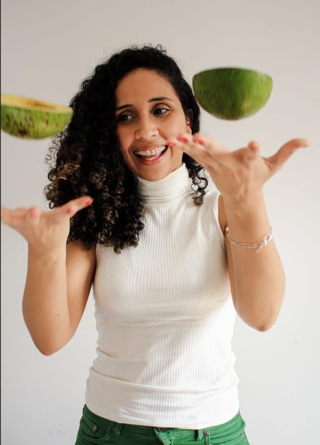
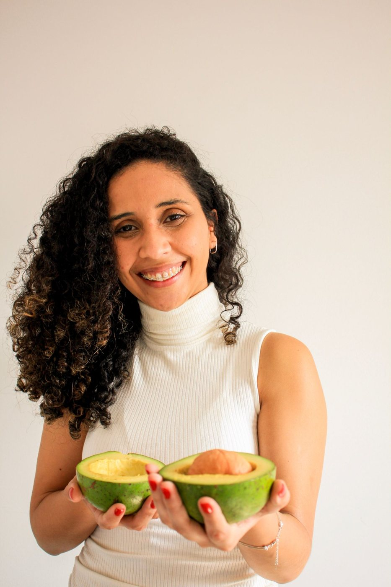
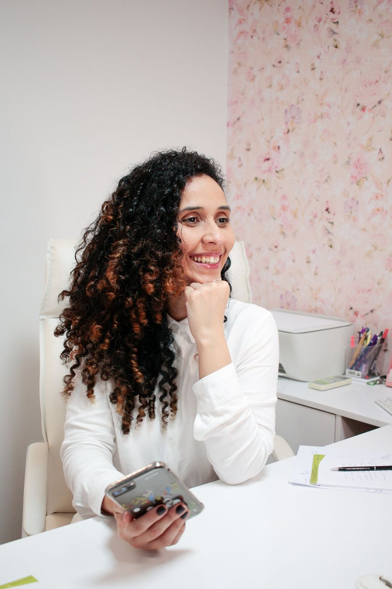

Vida saudável, com leveza e equilíbrio
Você não precisa de mais uma dieta. Precisa de um acompanhamento que faça sentido para a sua vida — gentil, sem terrorismo nutricional e com foco na sua autonomia.
Presencial nos Jardins, online ou em domicílio (home care).

Esse acompanhamento é para você que…
- Quer melhorar a alimentação sem viver de restrições
- Precisa organizar sua rotina alimentar
- Quer cuidar da saúde e prevenir doenças
- Convive com alguma condição de saúde
- Quer aprender a fazer escolhas com mais autonomia
- Está cansado(a) de começar uma dieta e abandonar depois

O que um acompanhamento nutricional faz por você
Escolha como prefere ser atendido(a)
Toque na opção e fale direto com a Letícia pelo WhatsApp.
Presencial
No consultório da Alameda Joaquim Eugênio de Lima, nos Jardins, pertinho da Paulista.
Agendar presencial → 💻Online
Do conforto da sua casa, com o mesmo cuidado e atenção.
Agendar online → 🏠Home care
Atendimento em domicílio: a nutricionista vai até você, no conforto da sua casa.
Saber sobre home care →
Muito prazer, sou a Letícia
Sou nutricionista especializada em Nutrição Clínica, com mais de 8 anos de atuação. Trabalhei por mais de 4 anos na área hospitalar e hoje atendo em consultório e em home care.
Atendo adultos e idosos que buscam uma vida mais saudável, sempre pensando no equilíbrio. Meu objetivo é que você tenha autonomia nas suas escolhas diárias. Seu corpo é o seu bem mais sagrado — eu te ajudo a cuidar e nutri-lo.
Vamos conversar?
EndereçoAlameda Joaquim Eugênio de Lima, 696
Jardins · São Paulo/SP
HorárioSegunda a sexta, das 10h às 21h
WhatsApp(11) 99729-5621
Menos restrição, mais equilíbrio
Presencial nos Jardins, online ou home care. Agende pelo WhatsApp.
Quero agendar agora